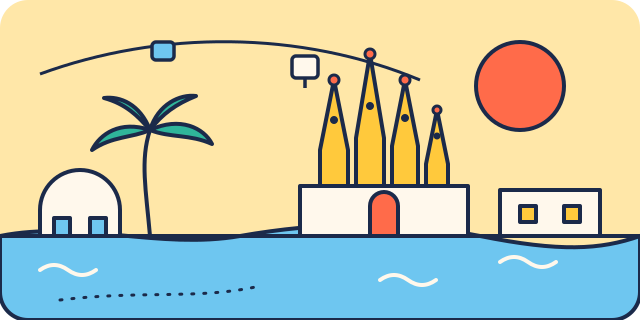

Les aires de jeux à Barcelone
1367 aires de jeux recensées, et les plus proches de chaque lieu pour la récréation entre deux visites.


Le bon réflexe : une aire de jeux entre deux visites, même dix minutes. Voici celles qui se trouvent à quelques pas des lieux du guide.
Arc de Triomf et Passeig de Lluís Companys
Aire de jeux, à 140 m
Aire de jeux, à 150 m
Aire de jeux, à 220 m
La carte pratique
Touchez un point pour lancer l'itinéraire.
Chargement des données OpenStreetMap…
Continuer
Avec un bébé
Lieux adaptés dès la naissance, sieste et change.
VoirQuand il pleut
8 lieux couverts pour sauver la journée.
VoirBarcelone gratuit
11 sorties gratuites ou en partie gratuites.
VoirAvec des ados
Bunkers del Carmel, Sagrada Família et d'autres idées pour les grands.
VoirFiches vérifiées le 29 octobre 2026. Services issus d'OpenStreetMap, non vérifiés sur place. Horaires, tarifs et conditions d'accès changent souvent : vérifiez toujours sur le site officiel avant de partir.